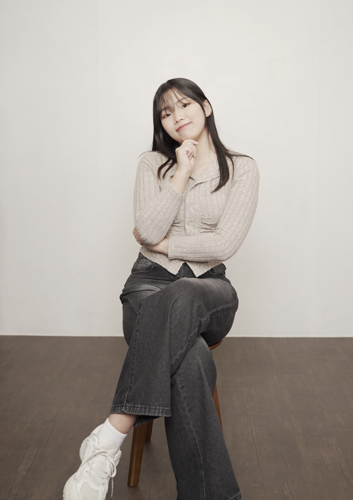
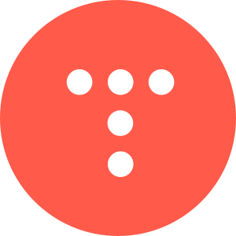
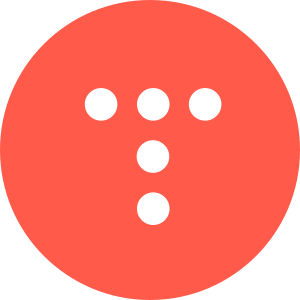

|
진소은
陳昭誾 | Jin Soeun
|
|
|---|---|
|  | |
| 출생 | 2002년 8월 29일 |
| 출신지 | 인천광역시 서구 |
| 국적 | 대한민국 |
| 본관 | 여양 진씨 (驪陽 陳氏) |
| 신체 | 170cm | 255mm | B형 |
| 가족 | 아버지, 어머니, 오빠 |
| 학력 | 인천가정초등학교 (졸업) 동인천여자중학교 (졸업) 가림고등학교 (졸업) 명지대학교 (컴퓨터공학과/재학) |
| 종교 | 무교 |
| 별명 | 쏘, 쏘시지, 손니 |
| MBTI | ESTJ |
| 링크 |
 | |
 | |
 |
 |

|
1. 개요
포기하지 않고 항상 도전하는 자세
명지대학교 컴퓨터공학과 학생이다. 고등학생부터 소프트웨어 개발에 관심을 가져 해당 진로를 선택 하였으며, 현재 대학과정 6학기 수료 후 휴학중이다.
2. 36기 AT SOPT 지원서 공통 질문 작성 내용[1]
2.1 끈기를 보여주는 경험
목표를 이루기 위해 반복적인 시도나 긴 시간이 필요했던 경험이 있다면 설명해 주세요.
작년 ‘사이버 시큐리티 해커톤’에 팀장, 클라이언트를 담당하여 참여한 것이 기억에 남습니다. 약 3일 동안 기획부터 개발까지 모두 해내야하는 보통의 해커톤과는 다르게, 해당 해커톤은 주제가 미리 발표되고 준비할 수 있는 시간이 주어졌습니다. 따라서 한 달이라는 시간 동안 약 열 번의 회의를 진행하였습니다. 마음과는 다르게 아이디어가 생각나지 않아 의욕이 떨어지기도 하고 잦은 회의로 인해 지쳐 포기하고 싶기도 했습니다. 하지만 팀원들과 공동의 목표를 가지고 힘차게 시작했기 때문에 ‘피할 수 없으면 즐겨라’라는 마인드로 힘듦 속에서 즐거움을 찾고 밝은 분위기로 회의를 진행하였습니다. 좋은 분위기 속에서 더 좋은 아이디어가 나오고, 작업 속도도 오르는 것이 느껴졌습니다. 이런 분위기를 본선까지 유지하여 결론적으로 최우수상을 수상하는 성과를 거둘 수 있었습니다. 이처럼 지속적으로 노력할 수 있었던 이유는 팀원 모두가 끈기와 열정을 가지고 하나가 되어 서로 격려하며 즐겁게 진행하였기 때문이라고 생각합니다. 또한, 반복적으로 무언가를 하는 것이 나를 지치게 할 수도 있지만, 반대로 나를 완전히 몰입하게 할 수 있다는 것을 이번 경험을 통해 배웠기 때문에 더욱 열정을 가지고 노력할 수 있었습니다. 이러한 경험은 언젠가 실패하더라도 끈기 있게 무언가를 해내었던 경험을 떠올려 다시 도약할 수 있도록 저를 더욱 단단히 만들어주었다고 확신합니다.
2.2 '좋은 팀'의 조건
지원자님께서 생각하는 ‘좋은 팀’에 대한 조건을 2가지 이상 작성해 주세요.
제가 생각하는 ‘좋은 팀’이란 ‘소통하는 팀’, ‘함께 성장할 수 있는 팀’, ‘즐거움을 찾을 수 있는 팀’이라고 생각합니다. 먼저, 팀원들 간의 활발하고 적극적인 의사소통이 좋은 팀을 만들어 가는 데 가장 중요하다고 생각합니다. 누군가가 먼저 의견을 내면, 다른 팀원들도 부담없이 활발하게 의사소통하는 경우가 많기 때문에 이를 통해 팀을 좋은 방향으로 이끌고자 평소 자진하여 팀장을 자주 담당하곤 합니다. 또한, ‘좋은 팀’이 되기 위해서는 나 혼자 성장하는 것이 아니라 함께 성장하는 것이 중요하다고 생각합니다. 이는 위에서 언급한 ‘소통하는 팀’이 된다면 자연스럽게 충족되는 조건이라고 생각합니다. 활발한 의사소통이 이루어진다면 모두가 열정을 가지고 팀 활동에 임하고 있다는 뜻이고, 이는 곧 개개인의 성장으로 이어진다고 생각하기 때문입니다. 마지막으로는, 팀과 함께 하며 즐거움을 느낄 수 있는 팀이 ‘좋은 팀’이라고 생각합니다. 단순히 재미에서 오는 즐거움이 아니라 몰입감, 성취감, 친밀감 등을 통한 즐거움을 느낀다면 수명이 긴, 지속가능성이 있는 팀이 될 수 있다고 생각합니다. 위에서 언급했듯, 저는 많은 팀 프로젝트를 진행하며 팀장을 담당하였습니다. 항상 ‘좋은 팀’을 만들고자 노력하였습니다. 그리고 위의 1번 질문에서 언급했던 팀이 저에게는 ‘좋은 팀’이었습니다. 활발히 소통하고 서로에게 부족한 부분을 채워주며 성장하였고, 지침 속에서 즐거움을 찾아내며 점점 팀이 하나로 연결되어 있다는 느낌을 받을 수 있었습니다. SOPT에서도 또 한 번 좋은 팀을 만들어보고 싶습니다.
2.3 도약과 성장의 경험
주어진 환경에 안주하지 않고 스스로 새로운 기회를 찾아 나섰던 경험이 있다면 공유해 주세요.
저는 주위 사람들에게 ‘열심히 산다’, ‘바쁘게 산다’라는 말을 자주 듣곤 합니다. 배우고 싶은 것도, 해보고 싶은 것도 많아 끊임없이 도전하기 때문이라고 생각합니다. 그중 가장 기억에 남는 경험은 대학교 비교과 활동에서 다섯 학기 동안 스터디장으로서 팀원들을 이끈 것입니다. 단순히 강의를 듣고 혼자 공부할 수도 있었지만, 많은 사람들과 의견을 나누며 여러 시각으로 문제를 분석하고 해결하고 싶어 스터디를 조직하였습니다. 같은 수업을 듣는 학생들을 모으고, 매주 스터디를 진행하여 보고서를 제출하는 등의 일들이 처음에는 부담스럽기도 했습니다. 하지만 이 과정이 큰 배움이 될 것이라고 확신이 있었고, 포기하지 않았습니다. 처음 만난 학생에게 스터디 제의를 하기도 하고, 어려운 부분은 교수님께 직접 질문하여 해결하는 등 적극적으로 문제를 해결해 나갔습니다. 그렇게 다섯 학기 동안 스터디원을 모집하고, 수료하는 과정을 반복했습니다. 처음에는 새롭다는 이유로 도전하기 두려운 일이기도 했지만, 점차 익숙해졌고, 마지막 활동에서는 우수 스터디로 선정되는 성과도 거두었습니다. 해당 경험은 저에게 끝없이 도전하는 자세를 가지게 해주었습니다. 마지막으로, AT SOPT에 지원하는 것도 저에게는 하나의 도약이라고 생각합니다. 스스로 더욱 성장하고, 세상의 문제를 해결하기 위한 새로운 도약을 36기 AT SOPT, 이곳에서 이루어보고 싶습니다.
2.4 나를 표현해 준 말
협업 시 팀원이 지원자님에 대해 표현한 말 중 가장 인상 깊었던 말을 말씀해 주시고, 그때의 상황과 인상 깊었던 이유를 설명해 주세요.
제가 가장 인상 깊었던 말은 ‘무조건 진소은을 믿어! 절대 그녀의 능력을 의심하지 마!’였습니다. 같은 과 동기들과 대회 준비를 하며 중간 점검을 하던 중 동기가 했던 말이었습니다. 중간 점검이기 때문에 아직 구현되지 않은 부분들이 있었고, 그에 대해서 동기가 ‘이러한 부분도 있는 게 좋을 것 같아’라고 말을 했고, 해당 부분은 제가 설계했지만, 아직 구현하지 않은 부분이었기 때문에 '설계는 했지만, 구현이 아직 안 됐다'라고 하자 다른 동기가 위에서 언급했던 것처럼 무조건 저의 능력을 믿고, 의심하지 말라고 해주었던 적이 있습니다. 농담으로 하는 말이었지만, 저에 대한 신뢰를 보여주는 팀원 덕분에 제가 담당한 일에 대해 자신감을 가지고 수행할 수 있었습니다. 또한, 제가 생각한 아이디어를 내면 항상 훌륭하다고 칭찬해 주고 열정적으로 피드백해 주는 팀원들 덕분에 저 또한 더욱 적극적으로 임하게 되었습니다. 이러한 과정에서 다시 한 번 팀원들을 믿고 응원해 주고, 적극적으로 의견을 내는 일이 팀에 활기를 불어넣고 열정을 끌어올릴 수 있는 행동임을 배울 수 있었습니다. 이러한 말이나 행동들이 협업에서 팀을 열정적으로 이끌어갈 수 있는 것임을 깨닫게 해주었기 때문에 저를 믿고 응원해 줬던 말이 가장 인상 깊었던 것 같습니다.